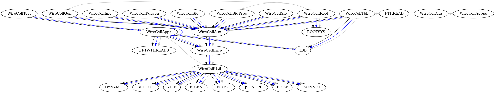

Wire-Cell Toolkit
Table of Contents
Welcome to the Wire-Cell Toolkit (WCT) source repository at https://github.com/wirecell/wire-cell-toolkit.
1. Overview
The WCT is a multi-faceted, high performance software project developed for liquid argon time projection chamber (LArTPC) simulation and data processing. Some features of WCT include:
- Layered tool design culminating in a reference command-line interface program.
- A multi-threaded execution model constructed following the data flow programming paradigm.
- Plugin, factory and configuration subsystems.
- Components providing simulation, signal processing and physics reconstruction algorithms.
- Suite of abstract interface classes.
- Low level utility algorithms, data structures and streaming data I/O formats.
Additional README information is available in the WCT sub packages:
See http://wirecell.bnl.gov/ for the home of Wire-Cell Toolkit documentation and news “blog”.
2. Installation
Wire-Cell Toolkit provides simple and automated installation while allowing you to adapt it so you may provide the required dependencies in a variety of ways.
2.1. External software dependencies
The WCT dependencies are curated and minimized with some required and some optional. Below shows the intra- and inter-package dependency tree:

Black arrows are library dependencies, blue are for applications and gray are for testing programs. They represent compile/link time dependencies.
The dependencies for the WireCellUtil package are required. The rest are optional. Missing optional dependencies, or ones specifically turned off, will cause the dependent WCT package to not be built.
Some external dependencies have explicit minimum required versions:
- TBB (oneAPI) 2021.1.1
- Boost 1.75.0
You may provide the necessary external software dependencies in a manner of your own choosing and some options include:
- Packages provided by your OS or built “by hand”.
- Spack-based install automatically builds all (non-OS) externals and WCT itself
- Some WCT releases are built at FNAL as a UPS product named
wirecell. - Exploit the above with a Singularity container and CVMFS.
2.2. Developer Source
Developers check out master branch via SSH.
$ git clone git@github.com:WireCell/wire-cell-toolkit.git wct
2.3. User Source
Users typically should build a release branch, either the tip or a tagged release on that branch. Tagged releases are shown on the this GitHub release page.
Users may also anonymously clone in the usual way:
$ git clone https://github.com/WireCell/wire-cell-toolkit.git wct
2.4. Configuring the source
On well-behaved systems, configuring the source may be as simple as:
$ ./wcb configure --prefix=/path/to/install
Software dependencies which can not automatically be located in system areas or via pkg-config can be manually specified. For a list of options run:
$ ./wcb --help
Here is an example where some packages are found automatically and some need help and others are explicitly turned off:
$ ./wcb configure \
--prefix=$HOME/dev/wct/install \
--with-jsonnet=$HOME/opt/jsonnet \
--with-root=no
...
Removing submodule "dfp" due to lack of external
Removing package "tbb" due to lack of external dependency
Removing package "root" due to lack of external dependency
Removing package "cuda" due to lack of external dependency
Configured for submodules: apps, cfg, gen, iface, img, pgraph, ress, sigproc, sio, util
'configure' finished successfully (5.683s)
2.5. Building
The libraries and programs may be built with:
$ ./wcb
2.6. Installing
To install:
$ ./wcb install
Optionally, the reference configuration and data files for one or more supported experiments may be installed by giving naming them with the --install-config option. A name matches a sub-directory under cfg/pgrapher/experiment/ or the special all name will install all.
$ ./wcb --install-config=<name> install
2.7. Testing
Running the tests can take a while but are off by default. They may be run with:
$ ./wcb --tests
See tests/README.html for more details on testing.
3. Release management
WCT uses an X.Y.Z version string. While X=0, a 0.Y.0 version indicates a new release that may extend or break API or ABI compared to Y-1. A Z>0 indicates a bug fix to Z-1 which should otherwise retain the API and ABI. Bug fixes will be made on a branch rooted on 0.X.0 called 0.X.x.
To make releases, the above details are baked into two test scripts make-release.sh and test-release.sh. See comments at the top of each for how to run them. These scripts can be used by others but are meant for developers to make official releases.